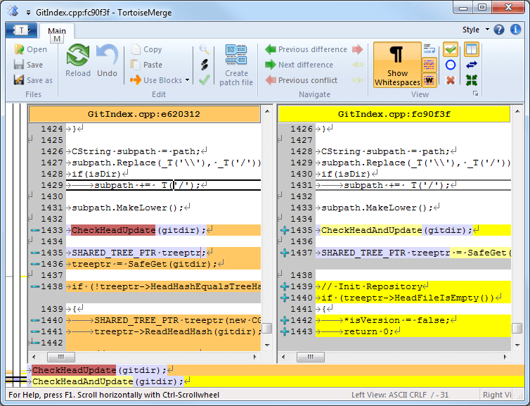

2-4Resolving Merge Conflicts2-4Resolving Merge Conflicts
2-4Resolving Merge Conflicts2-4Resolving Merge ConflictsWhen you start managing a large git project with multiple branches, you will start encountering merge conflicts. As such, it is a very important skill to have.
Firstly, if you encounter a merge conflict, don't panic. Really, when dealing with large git repositories, this result should be more or less expected.
When dealing with merge conflicts, the number one piece of advice is to know the code. Even if you didn't write it, you should know what every line in every file is intended to accomplish. If you know this, then resolving merge conflicts should come more or less naturally.
When you are dealing with a multi-branch repository, there are two things you need to keep in mind: how to minimize the number of merge conflicts, and how to approach resolving them when they arise.
The first step in dealing with merge conflicts is trying to prevent them in the first place. There is really only one piece of advice that you need to take into account here: merge from master (or whatever branch you will ultimately be merging back into) into your branch often. Whenever you think that the source branch has advanced a decent amount, just quickly merge from it. You may encounter some small conflicts as part of this process, but resolving them now keeps you from having to resolve them later alongside all of the other conflicts that will arise later. Additionally, this process allows you to develop effectively with the main stream of development, rather than beside it.
Essentially, merging into your branch often will minimize the number of conflicts you have to deal with at one time and even prevent some from arising in the first place. Really, in any case, it is this forward thinking that keeps the whole project moving forward smoothly.
However, there are some conflicts that simply can't be avoided. So, when you encounter these, you need to know how to address them. There are effectively two different cases you will encounter when resolving conflicts: addition and replacement.
For all of these examples, we shall assume that the last common commit contains a file with the following text content:
About the HOT Team
------------------
About FIRST
-----------
The first case is addition. This happens when you want to keep all of the conflicting code.
To see exactly how this happens, let's look at an example. When you view merge conflicts visually, you look at both versions of the file side-by-side.
Git will refer to your current version as mine
, and the conflicting version as theirs
.
MINE
About the HOT Team
------------------
The HOT Team is a member team in the FIRST Robotics Competition, FRC.
About FIRST
-----------
THEIRS
About the HOT Team
------------------
Every year, the HOT Team designs, builds, and programs a robot designed to accomplish FRC's design challenge.
About FIRST
----------
As you can see, git doesn't really know what to do with the paragraphs in red text because they're completely different. From git's perspective, it has no way of telling which paragraph you want to keep, if you want to keep neither, or if you want to keep both. So, in this case, git will error out of the merge with a merge conflict.
In this particular case, both paragraphs are correct, so we want to keep them.
The paragraph on the left is a better opener paragraph, so we want to use the paragraph from mine
before theirs
.
About the HOT Team
------------------
The HOT Team is a member team in the FIRST Robotics Competition, FRC.
Every year, the HOT Team designs, builds, and programs a robot designed to accomplish FRC's design challenge.
About FIRST
-----------
The next case is replacement. This happens when all of the code that you want to keep is on only one of the conflicting versions.
MINE
About the HOT Team
------------------
The HOT Team is a member team in the FIRST Robotics Competition, FRC.
About FIRST
-----------
THEIRS
About the HOT Team
------------------
The HOT Team is a golf team that uses flaming golf balls.
About FIRST
-----------
Here, git errors out of the merge due to the same reason as before: there are two paragraphs, and it doesn't know which one you want to keep.
In this case, as cool as it sounds, their
copy is very clearly erroneous. So, what you want to do is to use your copy in place of their copy.
About the HOT Team
------------------
The HOT Team is a member team in the FIRST Robotics Competition, FRC.
About FIRST
-----------
When git fails a merge due to a conflict, it leaves the conflicting files in your working tree in a semi-merged state, detailing the conflict.
In order to resolve the conflict, you need to be able to go into these files and remove each of these conflict blocks. This can be done one of two ways: using a graphical merge tool or using a text editor.
Note: because git leaves text in the source files themselves, your code will not compile until you resolve the conflict!
This is probably the most intuitive way to resolve merge conflicts. However, different tools function differently, and it can be difficult to go from using one tool to another.
Here, we will explore two different merge tools: TortoiseGitMerge and the EGit mergetool.
TortoiseGit comes with a very powerful and intuitive merge tool.
When your repository is left in a conflicting state, navigate to it in Windows Explorer, then right-click, open the TortoiseGit menu, and select Resolve
.
This will open up a dialog listing all of the conflicting files in the repository. To open the merge tool, double-click on a file.
When you open the merge tool, you will see something like this:
The two text editors side-by-side are the two conflicting versions of the file, and the editor at the bottom shows you the result. Orange-colored lines indicate lines that git automatically determined to delete. Yellow lines indicate lines that git automatically determined to add to the resulting file.
Any red highlighting indicates a conflict. You can jump between conflicts by using the red arrows at the top.
If you notice, anywhere there is a conflict, TortoiseGitMerge fills the corresponding lines with ?s in the result.
To fix this, right-click on the red text block (the black lines should enclose the entire text block, not just one line).
This will present you with four options:
Depending on the situation, you will want to select one of these four options. For example, in the addition example above, you would select Use text block from mine before theirs
.
In the replacement example, you would select Use text block from mine
.
Continue this process until all of the conflicts have been resolved in the file (the conflict arrows will grey out and there will be no more red text blocks in the bottom editor). When you save the file, tell TortoiseGit to mark the file as resolved when it asks.
If there are any more conflicting files, double-click on them in the Resolve
dialog (which should still be open). Repeat this process for each file.
When you are done resolving all of the conflicts, close the Resolve
dialog, and commit the result. Git should automatically fill in a commit message for you.
If you're using Eclipse, the EGit plugin came with a merge tool that you can use to resolve conflicts. However, it functions quite differently from TortoiseGitMerge.
When you merge, the last dialog in the process will tell you that your repository is left in a Conflicting
state.
This will further be shown next to the project root in the project explorer.
To find conflicting files, look for the red arrow icon. This will appear on not only conflicting files but also any folders that contain conflicting files (and folders that contain folders with conflicting files, and so on).
When you find the conflicting file, right-click on the file, go to Team
and select Merge tool
.
This will open up the merge tool in another tab. You will be presented with two text editors.
The one on the left represents mine
, and the one on the right represents theirs
.
Here, as opposed to merging two files to achieve a result, you need to think that you're merging conflicting changes from theirs
into mine
.
| ← 2-3 Branching | 2-4 Resolving Merge Conflicts |